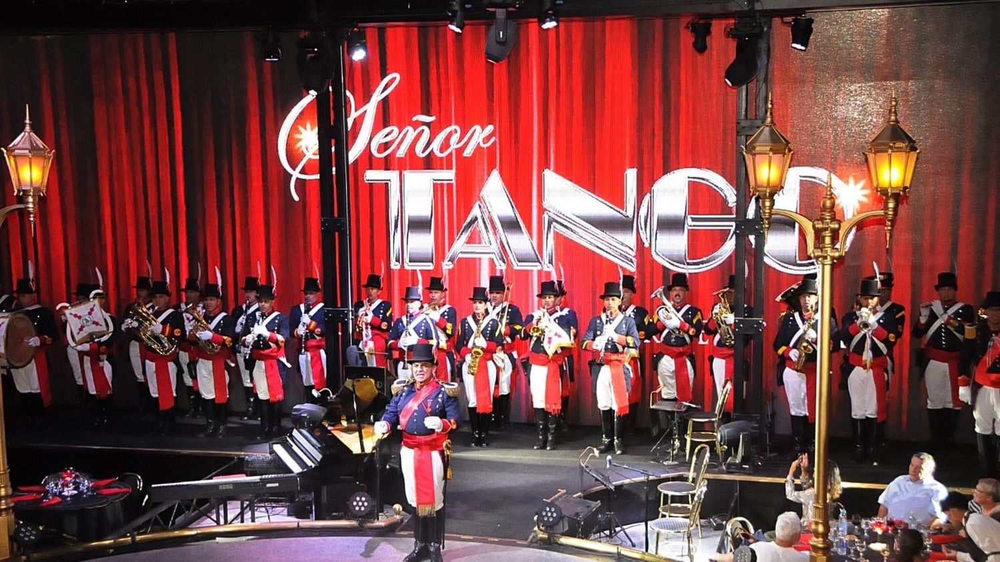
No. 01
Barracas
Señor Tango
A proven gala — already delivered for Cunard's Queen Victoria in 2025. Honor guard, Malambo & a Tango Spectacular.
Prepared exclusively for Cunard — three exclusive venues, each capable of hosting the Queen Anne's Buenos Aires gala on February 13 & 14, 2027. Choose a venue to explore the full proposal.

A proven gala — already delivered for Cunard's Queen Victoria in 2025. Honor guard, Malambo & a Tango Spectacular.
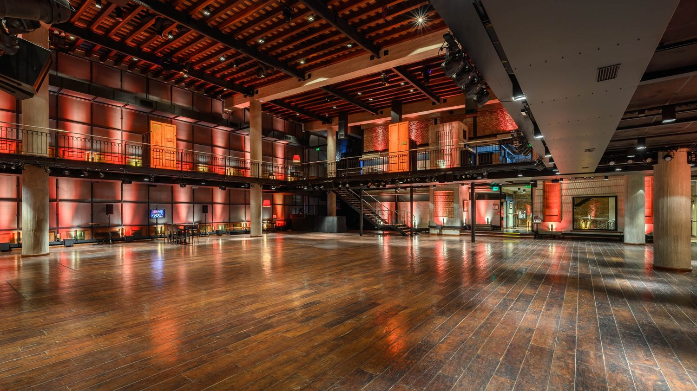
A 445-year-old archaeological complex — tunnels, ruins and a banquet hall, reserved entirely for the group.
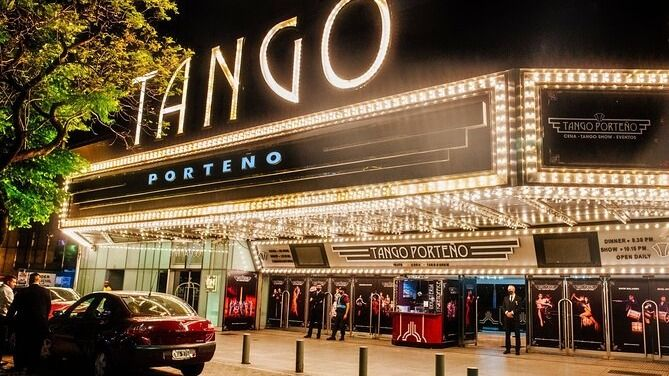
A restored 1920s Art Deco cinema, steps from the Obelisco — a live orchestra recreating tango's golden age.
All rates are final USD values, no commissions or gratuities, based on an estimated 1,500 guests. Ground transportation and local guides quoted separately within each proposal.
Vieytes 1655, Barracas — a proven gala, already delivered for Cunard's Queen Victoria in February 2025.
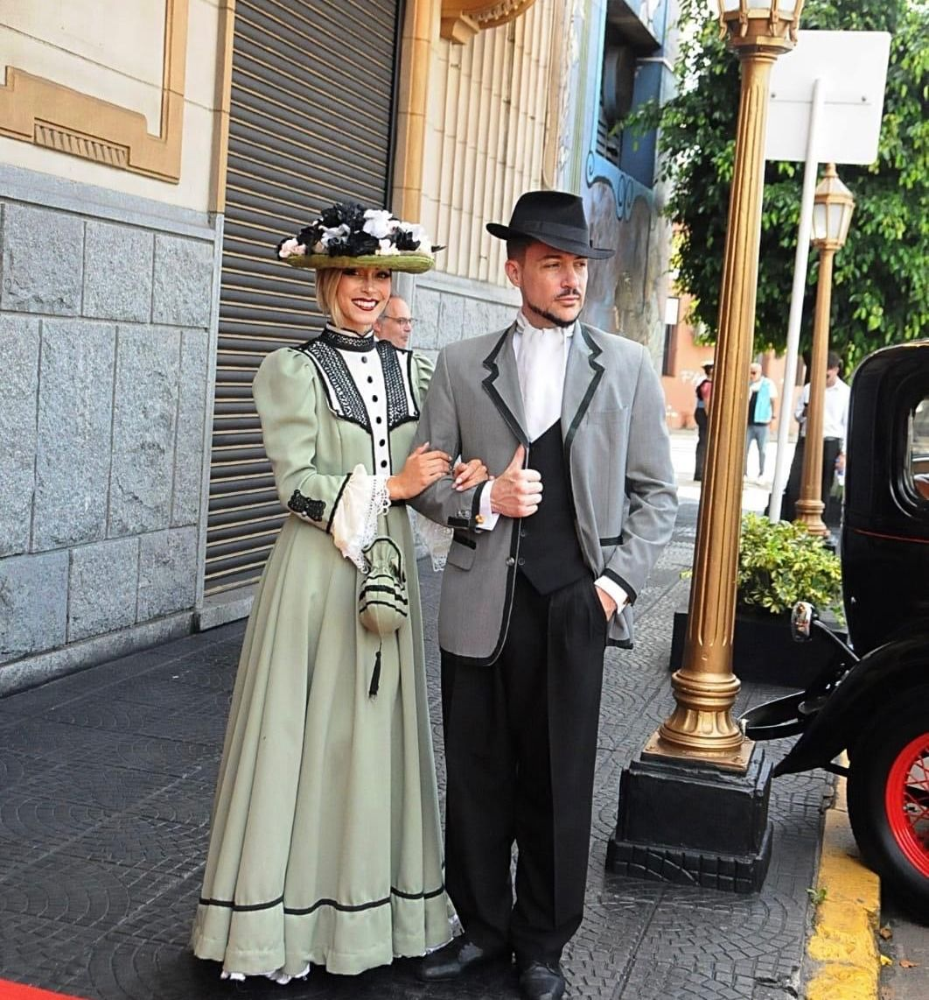
Señor Tango has hosted Cunard before — a Queen Victoria gala for 1,400 guests over two nights. This proposal builds on that same proven format for the Queen Anne.
A fully exclusive gala already delivered for Cunard's Queen Victoria — a known quantity.
A marching honor guard, antique cars and a red carpet — a welcome staged as its own spectacle.
A Malambo show and a full Tango Spectacular, performed back to back.
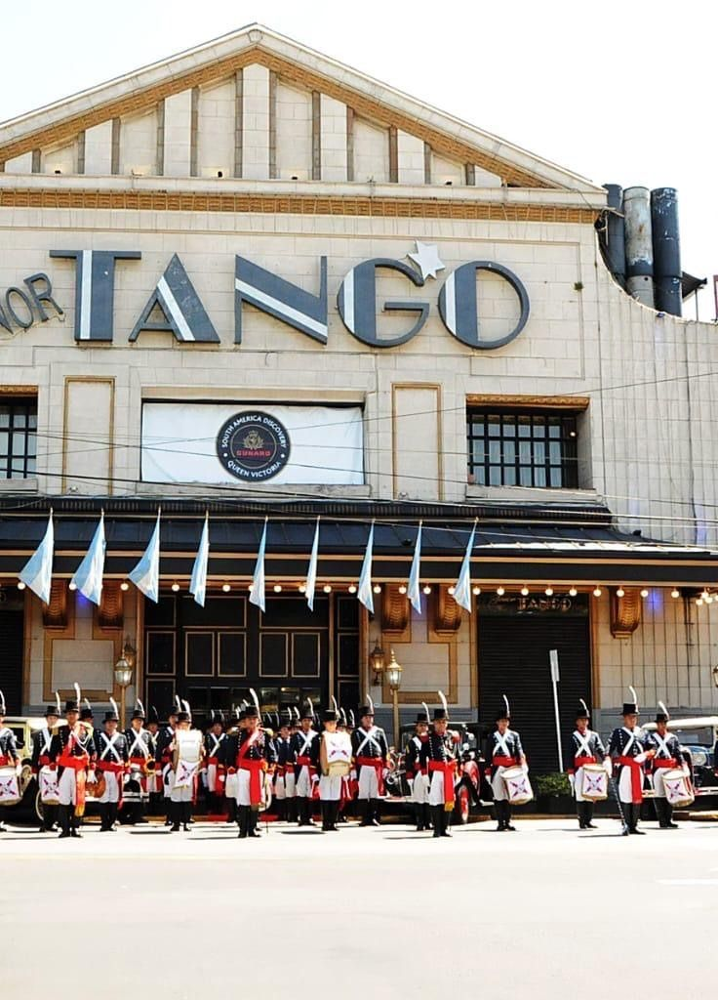
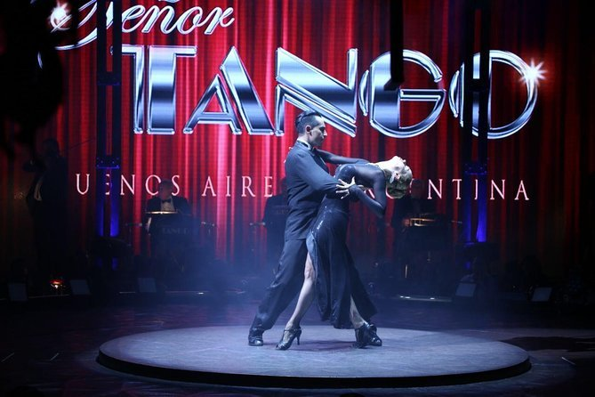
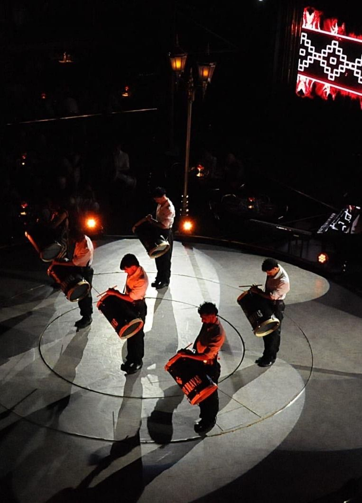
In February 2025, Señor Tango hosted an exclusive gala for Cunard's Queen Victoria — 1,400 guests across two nights, welcomed by a marching honor guard and antique cars, closed entirely to outside guests. The ship's own officers opened the evening on stage.
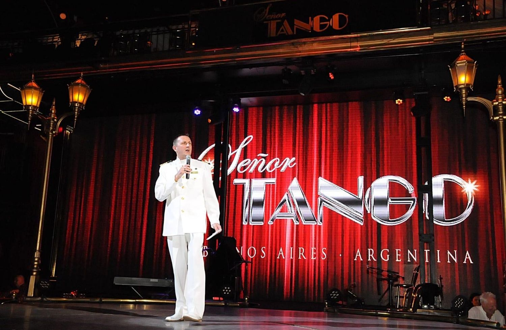
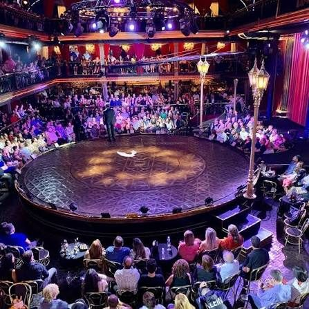
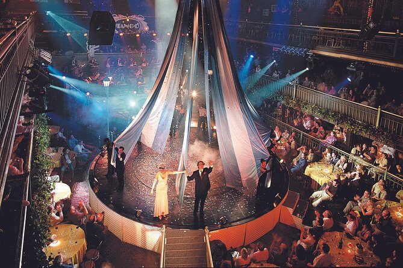
Video clips from the 2025 Queen Victoria gala.
Vieytes 1655, Barracas — arrival from 4:00 PM — full exclusive closure of the theatre.
Coaches arrive to a marching honor guard, antique cars and a red carpet reception.
A 30-minute Malambo show followed by a full orchestra, singers and dancers.
A seated three-course dinner with free-flowing wine, soft drinks and beer.
A souvenir photo gifted per couple before guests depart.
Following the same proven format used for Cunard's Queen Victoria gala, the group is split evenly across two consecutive nights.
Based on 1,500 guests across February 13 & 14, 2027 — final USD values, no commissions or gratuities.
USD 465,000USD 310 per person · 1,500 guests
| Item | Details | |
|---|---|---|
| Gala Experience | Exclusive venue, dinner, open bar, Malambo & Tango Spectacular | USD 240 |
| Transportation, Guides & Coordinators | Coach transfers, bilingual guides, on-site coordination | USD 30 |
| Welcome Reception Elements | Marching honor guard, antique cars, banners, photo | USD 40 |
| Total per person | USD 310 |
Figures based on an estimated 1,500 guests across both nights; final total will scale with the confirmed group size.
Basavilbaso 1350, Piso 10, Of. 02 — CABA
Paul Fitzpatrick — +54 9 11 5641-9758
Dirk Bleeker — +54 9 11 6782-6098
Ian Simeone — +54 9 11 3270-0931
www.shorexplorations.com
Vieytes 1655, Barracas, CABA
Los Patios & El Puente — San Telmo, Buenos Aires. A 445-year-old archaeological site as the stage itself.
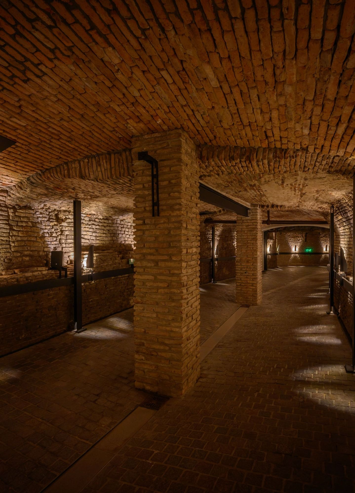
This gala is not staged, seated and repeated nightly for passing tour groups. It is built on a singular premise: a 445-year-old archaeological site as its stage — reserved exclusively, and impossible to replicate anywhere else in Buenos Aires.
Guests move through real 16th-century tunnels, ruins and courtyards discovered by accident in 1985.
Dancers appear unannounced in the tunnels and on the balconies — an emotional beat woven into the evening.
Los Patios, El Puente and the connecting tunnels are reserved entirely for the group.
Los Patios, the tunnels, and El Puente — a 75,000 sq. ft. complex spanning three interconnected buildings.
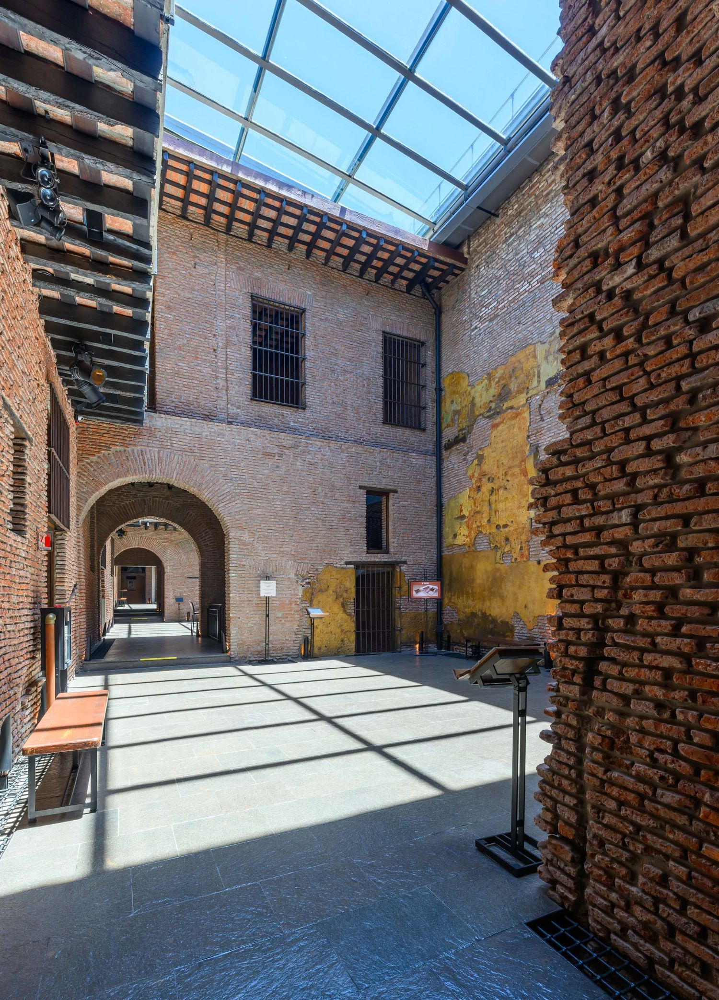
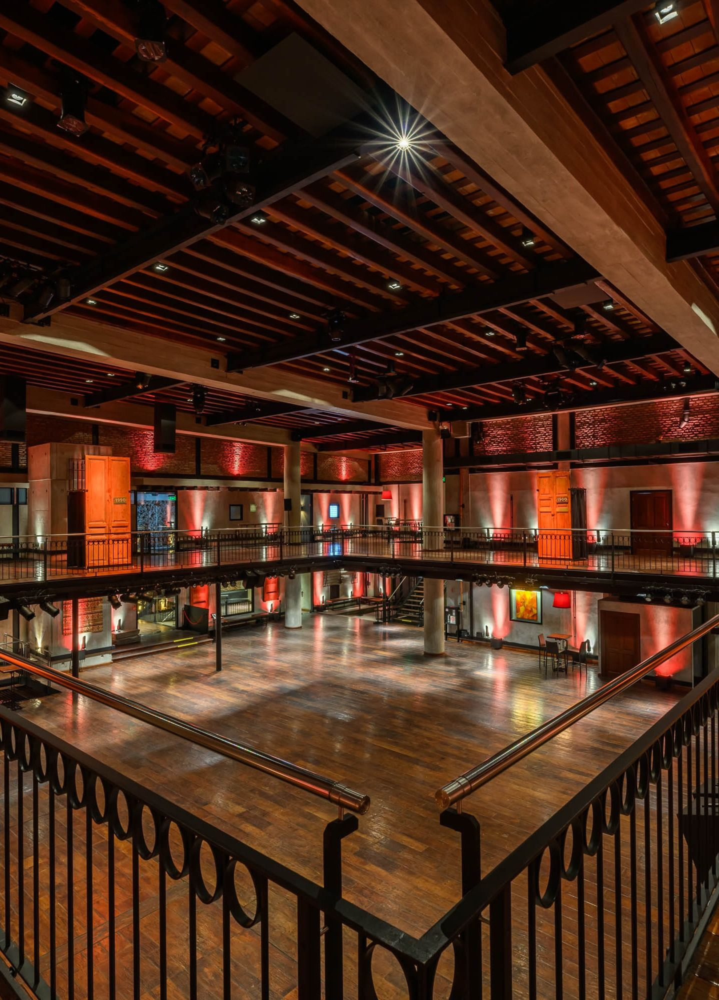
Arrival at Los Patios — total duration 3 hours — exit at 450 Chile St.
Argentine premium wines and hors d'oeuvres across three restored courtyards.
Groups of 20 guided through the 16th-century tunnel maze — the city's origins since 1536.
Dancers magically appear in the tunnels before the Art & Library Hall — the evening's first turn.
A three-course seated dinner for up to 500 guests beneath the archaeological ruins.
Dancers reappear above the room, recreating tango's history from 1890 to 1990.
Guests try a few steps with the dancers before a joyful Champagne toast.
El Puente's banquet hall has a maximum capacity of 530 guests per seating — for a group of this size, the program runs in two seatings per day.
Based on 1,500 guests across February 13 & 14, 2027 — final USD values, no commissions or gratuities.
USD 594,000USD 396 per person · 1,500 guests
| Item | Details | |
|---|---|---|
| Gala Experience | Venue, tunnel tour, live tango, 3-course dinner, open bar | USD 285 + VAT |
| Transportation, Guides & Coordinators | Coach transfers, bilingual guides, on-site coordination | USD 51 |
| Total per person | USD 396 |
USD 285 + 21% VAT (USD 344.85) for the venue package, plus USD 51 in transportation, guides and coordination.
Basavilbaso 1350, Piso 10, Of. 02 — CABA
Paul Fitzpatrick — +54 9 11 5641-9758
Dirk Bleeker — +54 9 11 6782-6098
Ian Simeone — +54 9 11 3270-0931
www.shorexplorations.com
Defensa 755, San Telmo, CABA
elzanjondegranados.com.ar
Cerrito 570, steps from the Obelisco — a restored 1920s Art Deco theatre and a live orchestra recreating the golden age of tango.
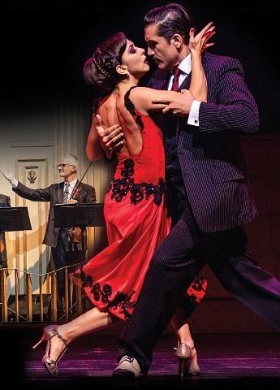
This gala is built around a full exclusive closure of Buenos Aires' most storied tango theatre — reserved entirely for the group, with the full cast, orchestra and kitchen dedicated to a single audience.
Housed in a beautifully restored 1920s movie palace, steps from the Obelisco.
A full live orchestra, vocalist and professional dance company recreate 1940s tango.
A single seating each night hosts up to 1,500 guests combined across both nights.
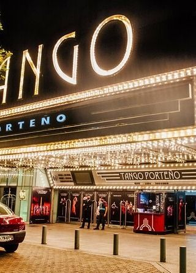
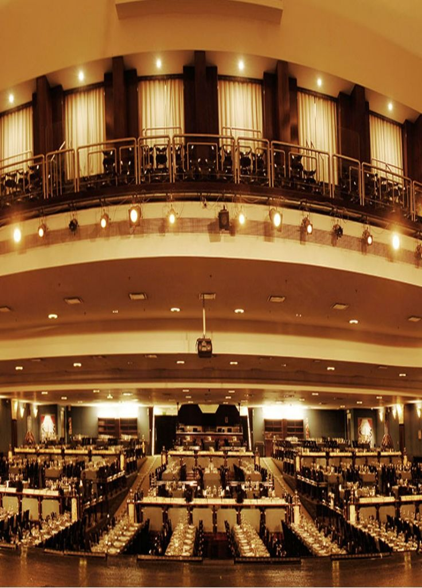
Cerrito 570, Buenos Aires — doors at 8:00 PM — full exclusive closure of the theatre.
Guests arrive to a theatre closed entirely for the group — no other audience, no shared seating.
A seated plated dinner rooted in Buenos Aires' culinary tradition, with wine and open bar.
A live orchestra, vocalist and dance company recreate the golden age of 1940s tango.
The show unfolds as a journey through the decade when tango was danced everywhere.
Tango Porteño's dining floor comfortably seats the full group across two consecutive nights, one seating per night.
Based on 1,500 guests across February 13 & 14, 2027 — final USD values, no commissions or gratuities.
USD 364,500USD 243 per person · 1,500 guests
| Item | Details | |
|---|---|---|
| Gala Experience | Exclusive venue, 3-course dinner, open bar, live tango show | USD 173 |
| Transportation, Guides & Coordinators | Coach transfers, bilingual guides, on-site coordination | USD 30 |
| Welcome Reception Elements | Arrival & reception coordination | USD 40 |
| Total per person | USD 243 |
50% deposit to confirm · 50% balance due 20 days before the event · rates subject to FX/inflation adjustment if paid later · invoicing in ARS · proposal valid through August 31, 2026.
Basavilbaso 1350, Piso 10, Of. 02 — CABA
Paul Fitzpatrick — +54 9 11 5641-9758
Dirk Bleeker — +54 9 11 6782-6098
Ian Simeone — +54 9 11 3270-0931
www.shorexplorations.com
Cerrito 570, Buenos Aires, CABA
tangoporteno.com.ar